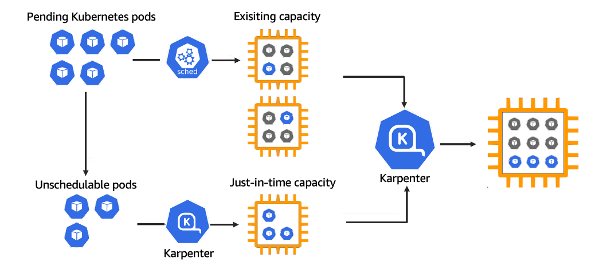
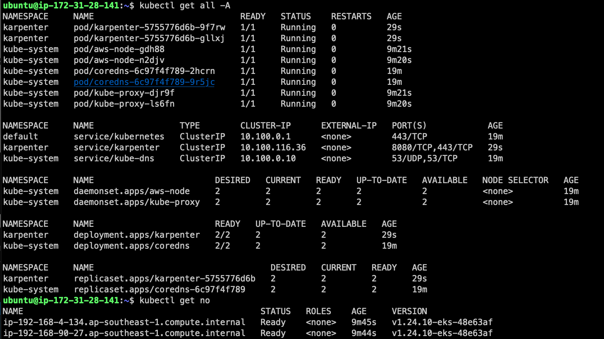
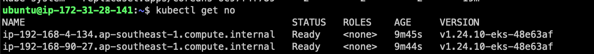
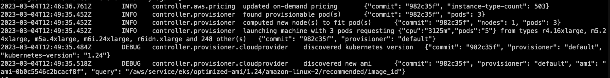

Why Karpenter
Karpenter is a node-based scaling solution for Kubernetes. Instead of creating many fixed node groups and asking Cluster Autoscaler to choose between them, Karpenter watches pending pods and launches compute that fits the workload.
The attractive part is operational simplicity. You define the constraints once, then Karpenter can choose from many EC2 instance types, zones, and capacity types. This is especially useful when you want Spot capacity without managing a long list of node groups.
Practical value: fewer static node groups, faster scheduling for unschedulable pods, and better bin-packing choices.
Architecture
Karpenter works next to the Kubernetes scheduler. When pods cannot be scheduled with current capacity, Karpenter computes the node shape required, talks to AWS, and launches EC2 instances that join the cluster.

When workload pressure goes down, Karpenter can also consolidate and terminate underutilized nodes, depending on the configured disruption and consolidation policy.
Setup
For this test I used the standard AWS/Kubernetes toolchain:
- AWS CLI for account access and IAM resources.
eksctlfor bootstrapping the EKS cluster.kubectlfor Kubernetes operations.helmfor installing Karpenter.
export KARPENTER_VERSION=v0.26.1
export CLUSTER_NAME="${USER}-karpenter-demo"
export AWS_DEFAULT_REGION="ap-southeast-1"
export AWS_ACCOUNT_ID="$(aws sts get-caller-identity --query Account --output text)"
Create resources and install
The install flow needs IAM permissions for the Karpenter controller, a node role for instances it launches, and a small baseline node group or Fargate profile to run the control-plane add-ons.
helm repo add karpenter https://charts.karpenter.sh/ helm repo update helm upgrade --install karpenter karpenter/karpenter \ --namespace karpenter --create-namespace \ --set serviceAccount.annotations."eks\.amazonaws\.com/role-arn"="$KARPENTER_IAM_ROLE_ARN" \ --set settings.aws.clusterName="$CLUSTER_NAME" \ --set settings.aws.defaultInstanceProfile="KarpenterNodeInstanceProfile-$CLUSTER_NAME"
After the controller is running, the main configuration object defines what Karpenter may launch: zones, capacity types, instance families, architecture, and labels/taints for scheduling.

Testing
The easiest test is to deploy a workload that cannot fit on the existing cluster. Pending pods should trigger Karpenter, and new EC2 instances should appear shortly after.

Controller logs are the best way to understand what happened. They show the computed node requirement, selected instance type, and whether the capacity was on-demand or Spot.

Notes
- Keep the baseline capacity small; let Karpenter own workload growth.
- Use constraints carefully. Too many restrictions can make pods stay pending.
- Watch interruption handling and consolidation settings before using Spot heavily.
- Read controller logs during early rollout; they explain scheduling decisions clearly.
Karpenter is useful when you want the cluster to choose compute based on the workload, not based on a long list of pre-created node groups.